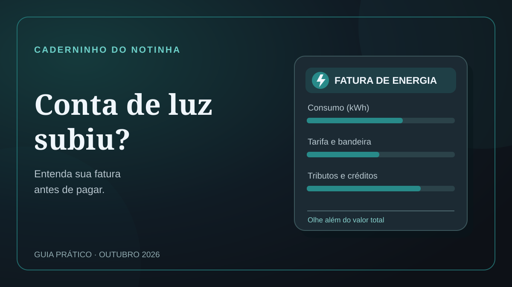

10 de outubro de 2026 · Custo de vida · Caderninho do Notinha
Conta de luz aumentou? Como conferir a fatura em 2026
O IPCA registrou alta de 7,98% na energia elétrica residencial em setembro. Isso não significa que todas as faturas subiram 7,98%. O primeiro passo é comparar o consumo em kWh e os demais itens cobrados.

O que mudou em setembro e outubro?
O IPCA divulgado em 9 de outubro registrou alta de 0,82% em setembro. A energia elétrica residencial subiu 7,98% no índice, influenciada pelo fim do desconto do Bônus de Itaipu de agosto. Isso é uma medida estatística, não um reajuste uniforme nas contas individuais.
Em setembro, a bandeira era amarela, com adicional de R$ 1,885 por 100 kWh. A ANEEL anunciou bandeira verde para outubro, sem adicional. Uma fatura recebida em outubro pode incluir consumo de setembro: confira o ciclo de leitura.
Como conferir a fatura
- Compare o consumo em kWh e os dias faturados.
- Verifique a tarifa aplicada pela distribuidora.
- Confira a bandeira do período de consumo.
- Procure ICMS, PIS/Cofins e iluminação pública.
- Veja se houve créditos, descontos, multas ou acertos de leitura.
O Ministério de Minas e Energia explica esses componentes. Se o consumo for igual mas o total subir, a diferença pode estar nos demais itens.
Quando contestar?
Se a leitura do medidor não corresponder à fatura, fotografe o visor sem manipular a instalação. A ANEEL orienta reclamar primeiro à distribuidora, depois à ouvidoria e, se necessário, à própria agência. Guarde os protocolos.
O Notinha permite registrar o valor de despesas por texto no WhatsApp, mas não confere medidores ou tarifas. Plano Pleno: R$ 14,90/mês, conforme página de assinatura consultada em 10/10/2026.
Conhecer o NotinhaLeia também como organizar gastos mensais e como guardar comprovantes Pix.
Fontes: Agência Brasil/IBGE (09/10/2026); ANEEL (25/09 e 28/08/2026); MME (03/07/2026). Conteúdo editorial do Notinha, publicado em 10/10/2026.